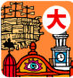
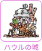

選擇您的預計票種
點選下方不同票種，地圖與下方的園區介紹將會自動篩選出「您可以參觀的範圍」！
您的身份別（購票管道）：
🎫 購票說明與管道：海外遊客請利用 Lawson 英文官網或 Klook。交通詳情請參閱 🚗 聯外交通指引。
互動園區地圖
點擊地圖上的園區，可以直接跳轉到下方看詳細介紹。目前地圖已套用上述選定的票種權限！
↔ 左右滑動可檢視完整地圖
園區詳細介紹與票種攻略
點選各區域深入了解遊玩重點、包含建築物與重要限制。
高級版可進
標準版可進
吉卜力工作室多部經典作品
吉卜力大倉庫 ジブリの大倉庫

全室內的「吉卜力大博覽會」，包含名場面展覽、兒童遊樂場與小電影院。
目前票種狀態： 可進入參觀
這是吉卜力公園的核心，是由舊溫水游泳池改建而成的超大型室內展館。所有的經典週邊與最熱門的名場面合影都在這裡。
✨ 必看與必玩亮點：
- 吉卜力名場面展：與無臉男在電車上合照。
- 天空之城巨神兵：極具震撼的等身大機器人。
- 獵戶座電影院：播映吉卜力美術館限定的短篇動畫。
- 貓巴士遊樂區：專為小學生以下設計的毛茸茸貓巴士。
- 冒險飛行團：全園區最大、最齊全的紀念品商店。
- 龍頭飛船：懸掛在半空中，長達 6.3 公尺的飛船。
💡 攻略與重要限制：
- 指定入場時間：購票時必須選擇大倉庫的入場時段（如 10:00、12:00 等）。必須在指定時間後 1 小時內入場。
- 禁止重複入場：一旦離開大倉庫，就無法再次進入，請務必逛完並買足紀念品再離開。
- 排隊限制：名場面展（無臉男合照）經常要排隊 30-60 分鐘，建議一進大倉庫就先去排隊，或者安排在較晚的時間。
高級版可進 (室內)
標準版可進 (外觀)
《心之谷》、《貓的報恩》
青春之丘 青春の丘
重現《心之谷》中的「地球屋」精品古董店與《貓的報恩》中的「貓咪事務所」。
目前票種狀態： 可進入參觀（大散步券高級版可進入地球屋室內）
位於公園入口處的斜坡旁，以 19 世紀末的蒸汽龐克美學為基調，融合了明治與大正時代的建築風格。
✨ 必看與必玩亮點：
- 地球屋：《心之谷》中爺爺的古董玩具店。
- 貓咪事務所：迷你版的貓咪專屬辦公室。
- 時鐘電梯塔：融合《天空之城》與《霍爾》風格，完全免費。
- 古董郵筒：可以在地球屋前的郵筒寄出信件。
💡 攻略與重要限制：
- 票種限制：如果拿的是標準版或里山券，您只能在圍欄外觀看地球屋的外觀，不能進入建築內部。只有高級版能進入地球屋室內觀看精美的小提琴工作坊與音樂鐘。
- 參觀動線：因為它就在北口入口處，建議在剛入園或準備出園時順道參觀，避免往返奔波。
高級版可進 (室內)
標準版可進 (外觀)
里山券可進 (山頂)
《龍貓》
動動力森林 どんどこ森
隱藏在森林深處的龍貓世界，擁有「皋月和梅的家」以及山頂的巨型木造龍貓。
目前票種狀態： 可進入參觀
這裡完整保留了 2005 年萬博會建造的「皋月和梅的家」，四周被茂密的森林環繞，是園區內最具有自然鄉村氣息的區域。
✨ 必看與必玩亮點：
- 皋月和梅的家：真實還原動畫中的平房，連抽水機都可以操作。
- 咚咚吭堂：山頂上高達 5 公尺的木造龍貓遊戲設施（僅限小學生以下進入內部）。
- 咚咚吭森林步道：充滿松木香氣的自然森林步道。
💡 攻略與重要限制：
- 地理位置極遠：從大倉庫走到這裡需要 **20 - 25 分鐘**。建議一定要利用公園的免費接駁巴士或購買APM 貓巴士車票。
- 里山散步券限制：若持有「里山散步券」，您只能走上山頂觀看咚咚吭堂（龍貓雕像），但不能進入山腳下的「皋月和梅的家」園區內。
- 標準版限制：標準版無法進入「皋月和梅的家」內部，僅能在大門外與山頂步道參觀。
一個融合了傳統日式里山景觀的區域，展現了人與自然共生的氛圍。在這裡可以體驗烤日式五平餅。
✨ 必看與必玩亮點：
- 乙事主滑梯：高達 3.4 公尺的巨型野豬神，背面是磨石子溜滑梯（僅限 12 歲以下滑行）。
- 邪魔神雕像：高 2.8 公尺，色彩斑斕且充滿張力的雕像。
- 達達拉城體驗舍：炭火燒烤傳統點心「五平餅」的體驗設施（需現場額外付費，約 ¥1,200）。
💡 攻略與重要限制：
- 票種友善區：此區域**沒有限制室內建築內部**（因為主體都是戶外與半開放式體驗舍）。無論是大散步券（Premium/Standard）還是新設的里山券，體驗範圍都完全一樣！
- 地理位置：位於大倉庫的東北側，離大倉庫步行約 10 分鐘，旁邊就是前往咚咚吭森林的「APM 貓巴士」乘車起點。
高級版可進 (室內)
標準版可進 (外觀)
里山券可進 (外觀)
《魔女宅急便》、《霍爾的移動城堡》、《安雅與魔女》
魔女之谷 魔女の谷

吉卜力公園最大的主題園區！重現歐洲風情、巨型霍爾城堡與琪琪的麵包店。
目前票種狀態： 可進入參觀
充滿異國風情的魔法小鎮，包含驚人的 20 公尺高「霍爾的移動城堡」，城堡每隔一段時間還會噴出蒸氣並微微晃動，非常震撼。
✨ 必看與必玩亮點：
- 霍爾的移動城堡：超大型實體城堡，內部有霍爾的臥室、浴室與火魔卡西法。
- 歐其諾家：《魔女宅急便》中琪琪的老家，包含媽媽的藥草調配室與琪琪的房間。
- 魔女之家：《安雅與魔女》中魔女貝拉·雅加的奇幻工作室。
- 琪琪的麵包店 (Guchokipanya)：販售美味的現烤麵包與劇中同款麵包。
- 旋轉木馬與飛行機器：以吉卜力飛行器和動物為主題的精美遊樂設施（需現場額外買票）。
- 熱風餐廳 (Hot Tin Roof)：提供獨特魔女特色簡餐與貓咪肉餡餅。
💡 攻略與重要限制：
- 2026年最新限制 (霍爾城堡入場)：自 2026 年 7 月起，若購買含魔女之谷特定設施的門票，「霍爾的移動城堡」內部觀覽將改為「指定入場時間限制」以維持參觀品質。
- 標準版與里山券限制：不能進入霍爾城堡、歐其諾家、魔女之家的室內。但可以在魔女之谷購買麵包、用餐、搭乘旋轉木馬以及觀看城堡噴蒸氣的外觀。
- 拍照建議：魔女之谷是網美打卡聖地，特別是傍晚燈光亮起時，城堡與歐洲街景非常有氛圍，建議安排在下午遊玩至閉園（17:00）。
聯外交通指引
吉卜力公園位於愛知縣長久手市，以下為您整理最常用的聯外大眾交通攻略。
🚇 地鐵 ＋ Linimo 磁浮列車 (最推薦)
- 名古屋站 (搭乘地鐵東山線)
- 藤丘站 (藤が丘駅，抵達終點站後出站轉乘)
- 搭乘東部丘陵線 (Linimo 磁浮列車)
- 愛・地球博紀念公園站 (下車出站即達公園北口)
🚌 名鐵直達巴士 (免轉乘首選)
- 名古屋站名鐵百貨旁 (名鐵巴士中心 4 樓 24 號站牌)
- 搭乘前往「愛・地球博記念公園 (ジブリパーク)」直達巴士
- 愛・地球博紀念公園站 (直達北口巴士乘車處)
園內交通工具攻略 (免費巴士 vs. 龍貓 APM 貓巴士)
吉卜力公園園區非常廣闊，善用園內交通工具可以幫您省下大量體力。以下為搭乘與購票細節：
🚌 公園免費巡迴巴士 (不需買票)
- 如何搭乘：完全免費，不需事前預約，也不需要出示任何門票。看到車來直接排隊上車即可。
- 路線規劃 (東線 - Ghibli 最實用)：
• 北口站 (起點) ➡️ 魔法之里站 ➡️ 大倉庫/溜冰場站 ➡️ 日本庭園/魔女之谷站 ➡️ 咚咚吭森林站 (終點)。 - 發車班距：平日與假日約 **20 分鐘一班**，閉園前會加開班次。
- 西線 (遊客較少用)：主要往返大摩天輪、西口停車場、溜冰場。若從西口入園才需要搭乘。
🐱 龍貓 APM 貓巴士 (付費體驗車)
- 如何購票：無法事前預約。必須在乘車點旁的「自動售票機」現場購票。支援現金與日本電子票證 (Suica, Pasmo, Manaca 等 IC 卡)。
- 運行路線：僅往返於 **「魔法之里」 ↔ 「咚咚吭森林」** 之間的森林秘境便道 (車程約 10 分鐘，沿途可欣賞一般遊客無法進入的森林風景)。
- 單程票價：
• 成人 (國中生以上)：單程 ¥1,000。
• 兒童 (4 歲至小學生)：單程 ¥500。
• 3歲以下：免費 (不佔位，需家長抱著)。
• 身障者與陪同者(限1人)：享半價優惠。 - 乘車體驗：使用豐田低速電動車 (APM) 改裝，毛茸茸的貓皮座椅、會發光的貓眼睛與耳朵，開車時還會播放龍貓電影配樂，儀式感十足！
🌳 莫里科羅公園 (愛・地球博紀念公園) 介紹
- 不用門票的地方：莫里科羅公園本身是一個巨大的都市公園，包含時鐘電梯塔、大草坪廣場、日本庭園、林間步道皆為免費開放，沒有買到吉卜力門票也可以來野餐散步。
- 中部最大摩天輪：位於公園西側，可俯瞰整個長久手市與世博舊址（需額外付費搭乘）。
- 愛知縣兒童綜合中心：超大型室內兒童遊戲館，門票極便宜（成人 ¥300，國中生以下免費），內有巨型迷宮、戲水區，是雨天與親子遊玩的絕佳備案。
- 香流亭茶室：位於日本庭園中，可以體驗傳統的抹茶與日式點心。
- 園內免費接駁車：公園面積有 200 公頃，設有「免費巡迴巴士」，分為黃線與紅線，約 20 分鐘一班，能往返車站、大倉庫與咚咚吭森林。
📌 吉卜力公園遊玩避坑指南
- 搶票時間（極重要）：門票於出發前2個月的10號下午2:00（日本時間）開賣，大散步券高級版（Premium）通常在 10 分鐘內完售。
- 海外購票方案：若官網搶不到，可以去 Klook 或 KKday 上尋找一日遊套票或含門票的飯店套裝行程，雖然總價較高，但通常會有保障名額。
- 實名制與證件：門票上印有購票者姓名，入場時有機會抽驗。海外旅客請務必隨身攜帶護照正本供查驗。
- 寄物櫃資訊：大倉庫與各展區內部不能帶行李箱進入。建議將大行李寄放在「Linimo 車站」的寄物櫃，或「北口問訊處」旁的行李房。
- 餐飲安排建議：吉卜力園區內（如大倉庫牛奶攤、魔女之谷餐廳）排隊時間非常長。建議可以在莫里科羅公園的「北口餐飲區（有吉卜力風格餐車與拉麵店）」或「羅森超商」先買好食物，在大草坪或公共區域長椅享用。
- APM 貓巴士：來往「魔法之里」與「咚咚吭森林」之間，單程票價成人 ¥1,000，兒童 ¥500，車票在自動售票機購買，非常熱門。